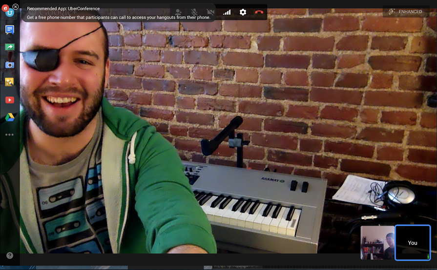
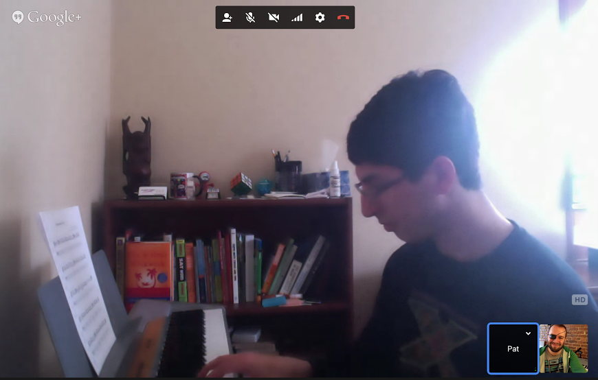

<div class="pure-g-r">


<div class="pure-u-1-1">
<p>It’s not always easy to commute to an instructor. Now, you can take lessons at your own

convenience, without having to leave your room!

I will send you materials/exercises online, including PDFs of exercises, audio examples, 

and more.

As someone with a tight schedule, it's not always easy to find time for another 

commitment. If you're like me, Skype lessons are the answer! All you need is a camera, 

a broadband connection, and a piano or keyboard of your own.
</p>

<a class="contact-me" href="/contact/">Contact me to sign up for a free half-hour lesson now!</a>
</div>
</div>